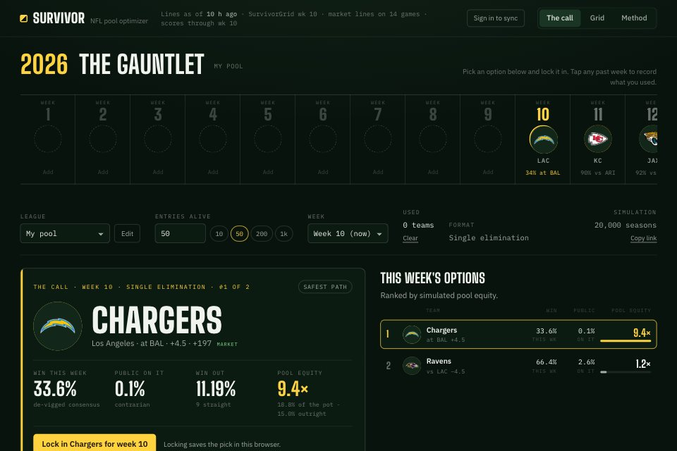
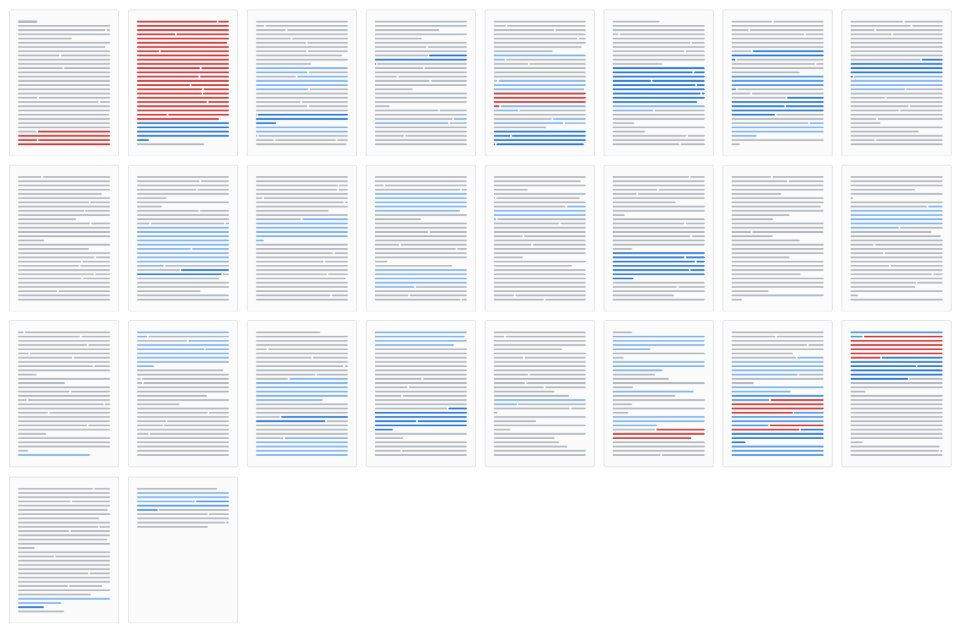
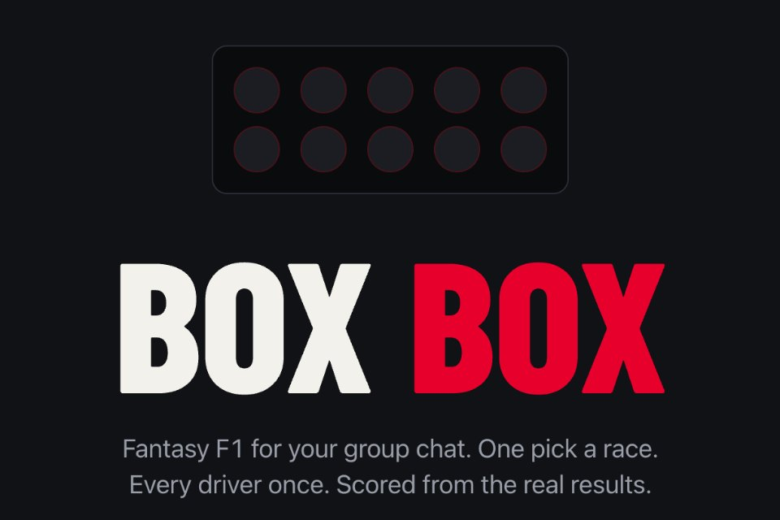

Data scientist. I take a question I care about, measure it carefully, and ship the answer as something people can use.
Selected work
Which team to pick each week of a survivor pool. It finds the best path through the season exactly, as an assignment problem, and prices each pick against the rest of the pool with 20,000 simulated seasons. Lines come from live betting markets and refresh every four hours.
2026Python, JavaScript, Hungarian algorithm, Monte Carlo
Open the optimizerCode

47,643 risk sections from SEC annual reports, each compared sentence by sentence with the same company's section a year earlier. 73% of sentences are last year's, word for word. A new sentence has a 23% chance of being gone the next year, and the pandemic made companies add to their risk sections, not rewrite them.
2026Python, sentence embeddings, Bayesian survival models, difference-in-differences
Read the reportCode

Fantasy F1 for a group chat. One pick a race, every driver once a season, scored automatically from the real race results. Private leagues, picks that lock at lights out, and reminder emails before each race.
2026Next.js, TypeScript, Prisma, Postgres
PlayCode

Earlier
My MS thesis: 545,316 hospital admissions from MIMIC-IV, models validated on later admissions than they were trained on, and an audit of how the best one treats patients of different races. A year later I reviewed it the way I'd review someone else's work.
2025R, XGBoost
Read the thesis and reviewWatch the defense
About
By day I work on product analytics and experimentation at Klaviyo.
Outside work I build things I'd want to use myself, usually where sports, markets and public data meet. I care most about framing the question well, being honest about uncertainty, and shipping something that holds up when people use it.
Languages: Python, SQL, R, TypeScript. Methods: experimentation and causal inference, forecasting, optimization, NLP. Building: data pipelines, web apps, LLM-powered tools.